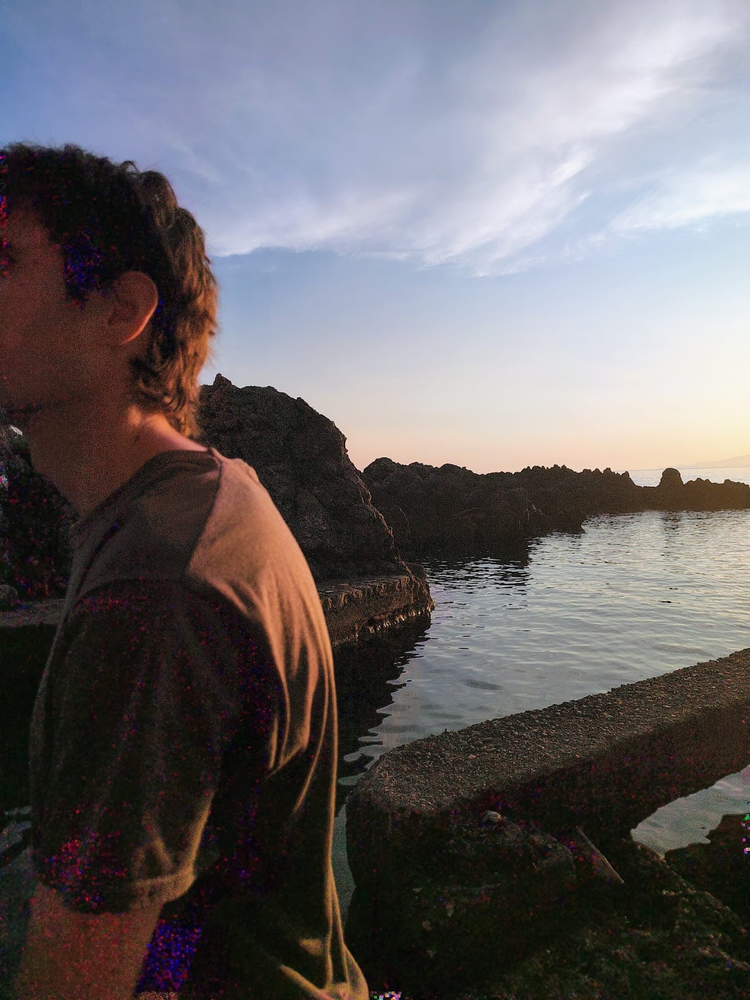

a picture here
Under review
-
A paper on cyclic proofs for Disquotational Truth (with Graham Leigh)
Under review -
A paper on the connection of Predicativity and compositional Truth (with Pablo Dopico)
Under review
In preparation
-
A paper on the inductive definitions and disquotational truth (with Carlo Nicolai)
Work in progress -
A paper on finitely iterated theories of truth.
Draft in preparation
Invited
-
Cyclic Disquotational Truth
Doctoral Seminar, University of Konstanz — 29 Jan 2026. -
From Disquotational Truth to Impredicativity
Synergia Seminar, Università di Urbino — 6 Nov 2025. -
Cyclic Proofs for Self-referential Truth
Formal Methods Seminar, King’s College London — 29 Jan 2025. -
The justificatory power of Disquotational Truth
Gothenburg Logic Seminar, University of Gothenburg — 29 Oct 2024. -
Notes on semi-formal systems for KF and GI
KCL-Bristol Logic Meeting, King’s College London — 20 Mar 2024. -
Minimal Fixed-points for Truth
Formal Methods Seminar, King’s College London — 8 Oct 2023.
Contributed
-
On Halbach’s Conjecture on Truth and Predicativity
- FILMAt 2026, Bologna — September 2026.
- Scuola Normale Superiore Logic Seminar, Pisa — May 2026.
-
Cyclic Disquotational Truth
- Cezary Ciesliński 60th Birthday Conference, Warsaw, Poland — September 2026.
- Recent Developments in Formal Theories of Truth and Type-Free Theories, Amsterdam, Netherlands — June 2026.
- PLEXUS-KCL-SNS Logic Workshop, London, UK — June 2025.
- Scuola Normale Superiore Logic Seminar, Pisa — May 2025.
-
Inductive Truth and Generalised Induction
- Proof Society 2024 Workshop, Birmingham, UK — September 2024.
- Wormshop 2024, Ghent, Belgium — September 2024.
- 1st SNS-KCL Logic and Philosophy of Mathematics Meeting, Pisa, Italy — June 2024.
- British Logic Colloquium 2024, Bristol, UK — September 2023.
- LOGICA 2023, Teplá, Czech Republic — June 2023.
- Logic Colloquium 2023, Milan, Italy — June 2023.